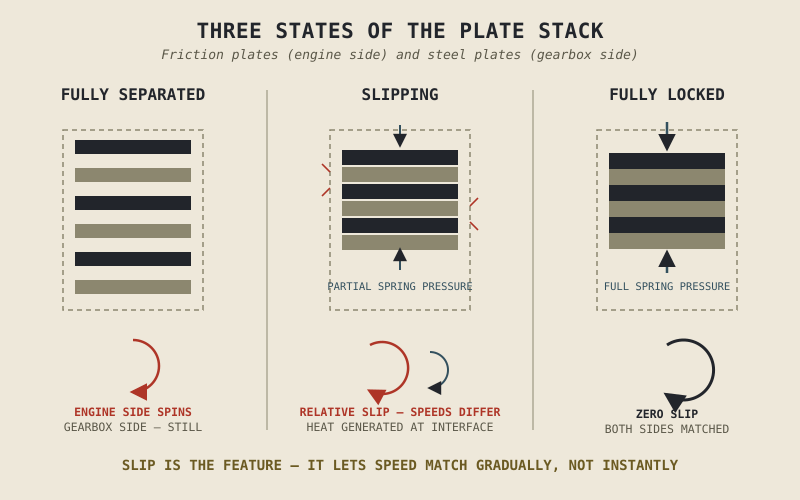

Every new rider's first real mechanical skill isn't braking or cornering — it's finding the exact point, a few millimetres wide, where a clutch lever goes from doing nothing to smoothly feeding power to the rear wheel. Get it wrong and the bike either stalls or lurches. Get it right and a motorcycle that was standing perfectly still starts rolling forward, gently, while the engine never once approaches the stall speed Chapter 3.1 said it can't run below. That narrow, controllable middle ground is the entire reason a clutch is more sophisticated than a simple on-off switch, and it's this chapter's subject.
Chapter 3.1 named the clutch's job in outline: connecting and disconnecting a running engine from a stationary wheel. This chapter explains the mechanism that makes that connection controllable rather than abrupt, and why the ability to slip, not just switch, is the whole point.
Friction Plates and Steel Plates, Stacked and Squeezed
A typical motorcycle clutch is a wet, multi-plate design: alternating friction plates and steel plates, stacked together inside a clutch basket. The friction plates are splined to spin with the engine's primary drive, while the steel plates are splined to spin with the transmission's input shaft. A set of springs presses this entire stack together, and when fully squeezed, friction between the plates locks them tightly enough that the engine and the gearbox's input shaft spin as one unit, with essentially no slip between them.
Pull the clutch lever, and a mechanism lifts that spring pressure off the stack, letting the plates separate just enough to spin independently of each other — the engine can keep running exactly as it likes, and the transmission's input shaft, connected to a stationary wheel, doesn't have to move at all. This is the disconnect Chapter 3.1 said was necessary. The interesting engineering, though, lives in the space between these two extremes.
Slip Is the Feature, Not the Flaw
Release the clutch lever partway, rather than snapping it fully in or fully out, and the plates come together with only partial pressure — enough to transmit some torque through friction, but not enough to force both sides to spin at exactly the same speed. This partial engagement, called slip, is the entire mechanism that makes launching from a stop possible at all: the engine can keep spinning above the stall RPM Chapter 3.1 described, while the transmission side gradually speeds up from zero, with the friction between the plates doing the work of accelerating the wheel smoothly rather than demanding an instant, jarring match between two very different rotational speeds.
As road speed rises, the rider gradually releases the lever further, and the pressure — and therefore the amount of torque the plates can transmit without slipping — increases until both sides finally spin in perfect unison, at which point the clutch is fully engaged and slip drops to zero. Everything a new rider learns to feel through the clutch lever is, mechanically, learning to control exactly how much slip is happening at any given moment.
A clutch that could only be fully locked or fully open would make it impossible to launch smoothly from a stop at all. Slip isn't a compromise the clutch makes — it's the specific capability that makes the whole mechanism useful.

A stack of alternating friction and steel plates shown at three states — fully separated, partially engaged with visible relative slip, and fully locked with matched rotational speed.
Where the Energy Goes: Slip Generates Real Heat
Chapter 2.19 spent a full chapter accounting for where an engine's fuel energy ends up, treating heat loss as something to be minimized wherever possible. The clutch is a rare case where dissipating energy as heat is the entire functional mechanism, not a loss to be avoided. While the plates are slipping, the friction between them is converting some of the engine's rotational energy directly into heat, in a way genuinely similar to how a brake converts a motorcycle's kinetic energy into heat, a comparison Part VII's braking chapters will return to directly. That heat is precisely what makes controlled slip possible — but it also means sustained slipping, from riding the clutch unnecessarily or an aggressive, prolonged standing start, generates real, sustained heat that can glaze or wear the friction material over time, a genuine maintenance item rather than an abstract concern.
Wet Versus Dry, and Slipper Clutches, Briefly
Most motorcycle clutches run wet, bathed in the same engine oil Chapter 2.16 described circulating through the rest of the engine, which cools the plates and extends friction material life considerably, at the cost of a small amount of viscous drag from the surrounding oil even when the clutch is fully disengaged. Some motorcycles, notably a number of sport-oriented models, use a dry clutch instead — no surrounding oil, distinctly less parasitic drag, and a characteristic rattling sound at idle, traded against faster wear and less effective heat dissipation, since there's no oil present to carry heat away the way Chapter 2.16 described it doing elsewhere in the engine.
A further refinement worth naming briefly is the slipper, or back-torque-limiting, clutch, which allows a small amount of deliberate slip specifically during aggressive downshifts or heavy engine braking, preventing the rear wheel from hopping or locking when the engine tries to slow the drivetrain more forcefully than the rear tyre's available grip can absorb — a preview of exactly the traction and engine-braking topics Part VII and Part IX will cover in full.
A Common Misconception, Cleared Up Early
It's tempting, especially before you've spent real time riding, to think of a clutch as fundamentally a switch — power connected, or power disconnected, full stop. Everything this chapter has described shows why that framing misses the entire point: the clutch's real value lies specifically in the controllable middle ground between those two states, and the skill of "finding the friction zone" that every new rider has to build is nothing more than learning to control that slip precisely. A clutch that behaved like a true on-off switch would make smooth starts from a stop mechanically impossible, not just harder.
Where This Leads
The clutch solves the connection-and-disconnection problem Chapter 3.1 raised. What it doesn't solve is the second problem that same chapter identified: keeping the engine within its strong, efficient torque band across a road speed range far wider than any single fixed ratio could cover. Chapter 3.3 turns to the gearbox, the component built specifically to solve that second problem.
Key Concepts to Remember
- A wet multi-plate clutch alternates friction plates spinning with the engine and steel plates spinning with the transmission, locked together by spring pressure that a lever mechanism can release.
- Slip — partial engagement that allows some difference in rotational speed between engine and transmission — is the specific mechanism that makes smooth launches from a stop possible, not an imperfection to be eliminated.
- Slipping plates generate real heat as a functional part of how the clutch works, similar in principle to braking, and sustained unnecessary slip can wear friction material over time.
- Wet clutches trade a small amount of viscous drag for better cooling and longer friction material life; dry clutches reduce that drag at the cost of faster wear and less effective heat dissipation.
- A clutch is not a simple on-off switch — its entire usefulness comes from the controllable slip between fully engaged and fully disengaged, which is exactly the skill new riders learn to feel through the lever.
Cross-References
| ← Ch. 3.1 | Named the clutch's job in outline; this chapter explains the mechanism, slip, that actually makes that job possible. |
| ← Ch. 2.19 | Treated heat loss as energy to be minimized; this chapter shows a case where generating heat on purpose is the functional mechanism itself. |
| ← Ch. 2.16 | Described engine oil's cooling and lubricating role; this chapter extends that same role to a wet clutch's friction plates. |
| → Ch. 3.3 | Turns to the gearbox, the component solving the second structural problem Chapter 3.1 raised: keeping the engine within its efficient torque band across a wide range of road speeds. |